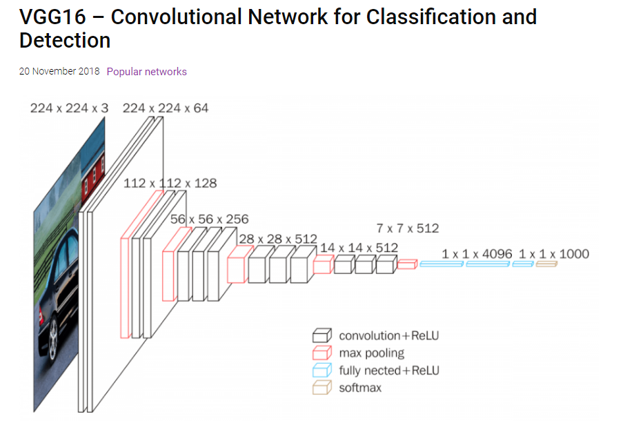
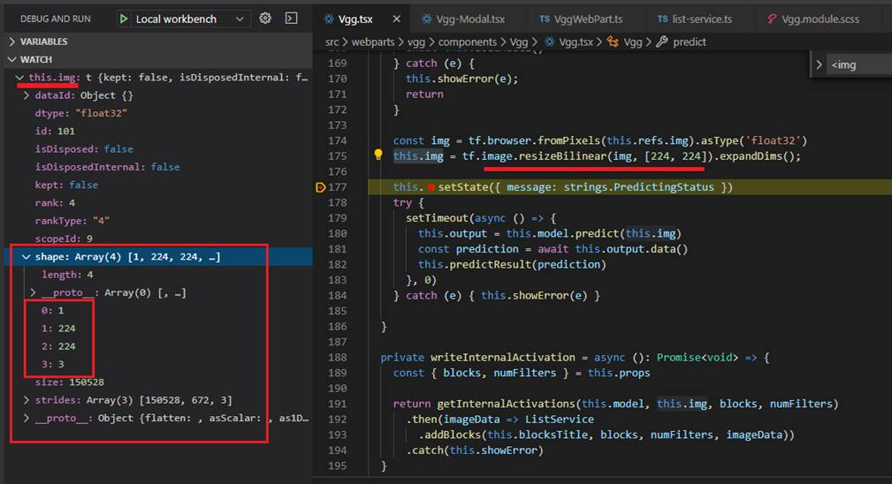
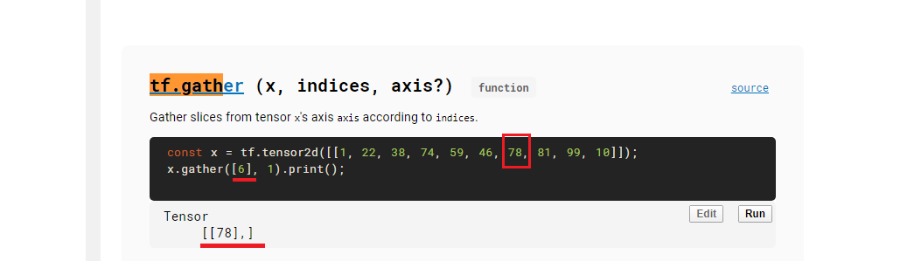
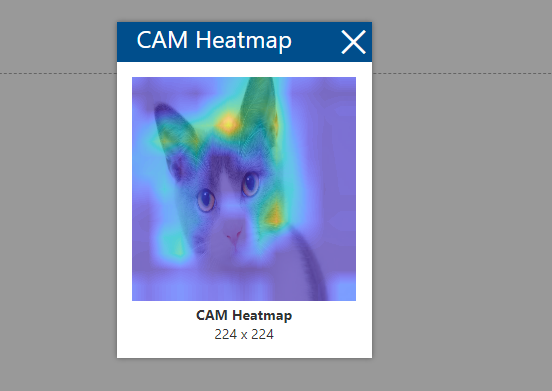

VGG16 Convolutional Network Internal Activations and CAM Heatmap
A convolutional neural network (CNN) (or convents for short) is a type of artificial neural network mostly used in image recognition and processing
and specifically designed to process pixel data.
VGG16 is a convolutional neural network model proposed by K. Simonyan and A. Zisserman from the University of Oxford in the paper Very Deep
Convolutional Networks for Large-Scale Image Recognition. The model archives 92.7% top-5 test accuracy in ImageNet, which is a dataset of over
14 million images belonging to 1000 classes. VGG weights are trained on ImageNet dataset.
ImageNet is a large-scale public dataset of labeled colored images. It is an important training set and benchmark for computer vision-oriented
deep neural networks.
This application is based on TensorFlow.js https://www.tensorflow.org/js which is an open source library that you can use to define, train and
run machine learning models entirely in browser, or in Node.js using JavaScript and a high-level API. As our application is a SharePoint (SPFx)
web part we are going to run it in a browser.
Figure 1
If you go to TensorFlow.js API page https://js.tensorflow.org/api/latest/ you will see tremendous amount of objects, functions and properties
that belong to this library. There are 2 sets of APIs. First one is low level linear algebra API that we are going to use in our app and the second one
is higher level API that makes pretty easy to make some more advanced machine learning algorithms. We will use both APIs.
Tensors
Tensors are the core data structure of TensorFlow.js. They are generalization of vectors and metrics to potentially higher dimensions.

Figure 2
Here are one, two and three-dimensional tensors.
Figure 3
I printed a 1D tensor, the size and the shape.
The size of the tensor is 4. With shape we are essentially talking about a property of a tensor that describes how many elements there are
in each individual dimension. Our 1D tensor's shape is [4].

Figure 4
The size of the 2D tensor is 12 and the shape is [3,4], as there are 3 rows and 4 columns.
Figure 5
The size of 3D tensor is 3, and the shape is [1, 1, 3]. In convolutional networks we mostly deal with 3D or 4D tensors that we will discuss it later.
We use tensors to do basic arithmetic operations like adding, subtracting, dividing and so on.

Figure 6
Here we add first tensor to second one. We take each value inside of first data tensor and add value from second tensor.
This is called element wise operations. We look at identical indices in both tensors and then do some operations on those
two individual indices together, then take the result of that and put it into a new output tensor.
Figure 7
Addition, subtraction, division and multiplication element wise operations with tensors.

Figure 8
Here is element wise operation addition on 2D tensors. There are other element wise operations such as less than,
greater than equal etc., logical comparison element wise operations and so on.

Figure 9
If two tensors' shapes do not match then we cannot do element wise operations. First tensor's shape is [4] and the other one's [3].
The second tensor does not have a corresponding value for the value 4 of the first tensor, so the result is undefined.
But there are some situations that we are allowed to do element wise operations even the shapes pf two tensors do not match.

Figure 10
You can see that the first tensor's shape is 3, the second tensor's shape is 1 and we do element wise operation addition though
their shapes do not match.
Element wise operations with two tensors that have different shapes is the process referred as broadcasting.
In order to know if broadcasting works, we take shape of both tensors from right to left and if shapes are equal to each other.
or one shape has a value of 1 (or no shape for the second tensor) then we are allowed to do broadcasting operation.
Figure 11
The shape of the first tensor is 3 and the second one is 1. Starting from right hand side to and comparing to left (does not make sense
in this case as both have single values). If they are identical or one of them is equal to 1 then we are allowed to do broadcasting operations.
In this case two shape values are not equal but the second one has a value of one. So, broadcasting is allowed.
Figure 12
Her is another example. Starting from right hand side and comparing to left. 3 is equal to 1, no but 1 is equal to 1 yes, so we are
allowed to broadcasting so far. We are moving to the next index, 2 is equal to 2, yes, they are, and we are allowed to do broadcasting.
Figure 13
In this case we received a broadcasting error as 3 is not equal to 2.

Figure 14
Here is a geometry of some examples visualized form a python book I was learning. It is explained on NumPy arrays
but it works for TensorFlow as well.

Figure 15
Testing third example with TensorFlow.js. We got the same result with broadcasting.

Figure 16
Let's see how to concatenate two tensors. I formatted the output for you to see how it was concatenated. You might expect
2 rows but the output shape is [4, 3], four rows and three columns not [2, 6], 2 rows and 6 columns. The concatenate method
has a second argument that you can use to specify which way your tensors will be joined together.
Figure 17
We can pass in the second integer argument to concat function either 0 or 1, because we have a two-dimensional tensor that we are with. The default
argument for this is 0. We got the same result that had before.
Figure 18
When we put in 1, we get a different result. 0 or 1 refer to the axis concatenation. Number 0 means concatenate along the columns,
1 along the rows.

Figure 19
Let's look at sum functionality. By default, if we call sum with no arguments it is going to look at every value inside of the tensor and sum them
all together and the result is 45. We can also sum along an axis very similar to how we were doing contamination along an axis. With axis 0 we
summed along each these rows [12, 15, 18] and with 1 along the columns [6, 15, 24].
Figure 20
Min function finding overall min value and values along the axis.
Figure 21
When we call the sum function it reduces the dimension of the output tensor. First tensor's dimension is [3, 3] and after the sum it is [3].
We went from 2D tensor to 1D. To keep dimension we call first.sum(1, true) with true argument. The second dimension is referred to as the keep
dimension argument. When we pass in a value of true and when the sum function runs, it is not going to reduce the dimensions of that input tensor.
The dimension is [3, 1]. We can get the same result with expandDims which increases the dimension of your tensor by 1.
Figure 22
The length of the shape is known as the tensor's rank. As I already mentioned 4D tensors are frequently used in many models such as
deep convolutional networks but 4D tensors are harder to visualize, because the world we live in has only three spatial dimensions. For that reason,
I am going to show 3D and 4D tensors having the same data with different shapes to get it better.

Figure 23
Here we have a 3D tensor of size 4. We reshaped the tensor. Initially, the shape was [1, 2, 2]. First dimension is displayed in the green border and you
see we have just one opening and closing bracket which is 1 in [1, 2, 2]. This is the height. The second dimension is the blue borders, which is 2 and this is the width.
Third one is the brown border; 2 and it is the depth.
In the reshaped tensor [2 ,1, 2] there are 2 brackets in the green rectangle 2 in [2, 1, 2] which is the height and each of them contains one width (blue rectangle)
1 in [2, 1, 2] and the last 2 in [2, 1, 2] is the depth. The third tensor is similar to the second one but the difference is that the height is 2 and depth is 1.
The third [2, 2, 1] is similar to [2, 1, 2] tensor.
We use a 3D tensor to represent an image. The first two dimensions of the tensor are the height and width dimensions. The third one, the depth
Is the color channel.
Figure 24
We encode color usually as red-green-blue (RBG) values. If we have an RGB-encoded color image of size 28 x 28 like in the picture above
then we can represent it as a 3D tensor of size [28, 28, 3]. As we have 3 channels RGB then the last number in the tensor is 3. In some
computer-vision problems images are non-color (e.g. grayscale). In those cases, we just have one channel and if we represent it as a 3D
tensor, the tensor shape would be [height, width, 1], say, [28, 28, 1].
The mode of encoding an image is referred to as height-width-channel or HWC for short.
We often combine set of images into a batch to perform deep learning on images. When batching images, the dimension of individual images
is always the first one. Therefore, a batch of images is a 4D tensor, with the four dimensions; image number (N), height (H), width (W),
and color channel (C) respectively. This format is known as NHWC. There is an alternative format which is NCHW where the channel dimension (C)
is located ahead of the height and width dimensions. TensorFlow.js supports both NHWC and NCHW formats but we will stick to NHWC one.
Figure 25
Here is 4D tensor [1, 2, 2, 4] and the first dimension is 1 the green rectangle. In terms of NHWC (assuming it is an image tensor) 1 is the batch size meaning we will perform deep
learning on a single image. 2 in the blue rectangle is the image height, the other 2 is the width the brown rectangle, and the last one 4 is the channel the violet color.
4 is a kind of unusual number for the channel as we stated that it should be either 3 or 1 but we will see later on that the channels in the output tensor do not actually
have to do with colors. Instead, they may represent different visual features of the input image.
Figure 26
A batch of 128 color images of size 256 * 256

Figure 27
Here is 4D tensor of size [4, 2, 2, 1]. The first dimension is 4, meaning we process 4 images to perform deep learning on them.

Figure 28
Let's look into VGG16 layers. You could see some repetitions of convulation + ReLU and max pooling layers.
Figure 29
VGG-16 has 16 layers. Its layers consist of Convolutional layers, Max Pooling layers, Activation layers and Fully connected layers.
There are 13 convolutional layers, 5 Max Pooling layers and 3 Dense layers. We will talk about filters later, but for now you should
see that (Figure 27) Conv 1 has 64 filters, Conv 2 has 128 filters, Conv 3 has 256 filters, Conv 4 and Conv 5 have 512 filters.
The VGG16 has been pretrained on the large-scale ImageNet dataset and is available as a Keras application. We need to convert it
in a format that TensorFlow.js can understand. I converted the VGG16 model from Python into Tensorflow.js format which is available
in my VGG16 GitHub page.
Figure 30
After the conversion we have model.json file and weights in .bin format. Note, that the size is 530MB and it is pretty big as compared to
MobileNet having less than 10MB weight size.
Figure 31
This is the VGG16 model summary and we are going to see what actually Convulational2D (conv2d) layer does.
Figure 32
You can also explore model.json file in a JSON viewer. You will see layers named block1_conv1, block2_conv1, block1_pool etc.
Note, that there are much more complicated models which perform better, for example Microsoft's ResNet model which was the
winner of 2015 ImageNet with 3.6% error rate, but the model has 152 layers! while VGG has 16.
You may ask yourself why just not to feed the pixel values directly into an MLP. This architecture is discovered through years of research in
neural networks and it leads to an accuracy significantly better.
Conv2d Layer
The first layer (Figure 29) is a conv2d layer, which performs 2D convolution. conv2d is an image-to-image transform, it performs 4D (NHWC)
image tensor into another 4D image tensor, possibly with different height and width and number of channels. It is similar to Photoshop filters
which lead to image effects such as blurring and sharpening.
In image processing, a kernel, or filter is a small matrix. It is used for blurring, sharpening, embossing, edge detection, and more.
This is accomplished by doing a convolution between a kernel and an image.
Figure 33
On the left site is the input to the convolutional layer, for example the input image (pixels). On the right site is the convolutional
filter/kernel. This is called a 3x3 convolution due to the shape of the filter. We perform the convolution operation by sliding this filter
over the input. At every point we do element wise matrix manipulation (Figure 6) and sum the result.
Figure 34
Here is the filter is at the top left, the output of the convolution operation 4 is show in the resulting feature map.
Figure 35
We multiply the respective numbers (the same colors) and sum up the result.
1x1 + 1x0 + 1x1 + 0x0 + 1x1 + 1x0 + 0x1 + 0x0 + 1x1 = 4
You should know that the values in the final feature maps are not actually the sums, but reLU function applied to them which is
not displayed here. You can read about nonlinear activation functions in my ml5-spfx-extension description page.
https://ashot72.github.io/ml5-spfx-extension/index.html
Figure 36
We slide the filter to the right and perform the same operation, adding the result to the feature map as well.
Figure 37
Here is the final feature map. I showed a convolutional operation in 2D using 3x3 filter. In reality these convolutions are
performed in 3D. As we knew an image is represented as an 3D matrix with dimensions of height, width and depth. A
convolutional filter has a specific height and width, like 3x3 or 5x5, and by design it covers the entire depth of its input so
it needs to be 3D as well. You may notice that the size of the feature map is smaller than the input, the input is 5x5 matrix and the
feature map is 3x3.
Figure 37 A
The convolution operation for each filter is performed independently and the resulting feature maps are disjoint. We then stack all these feature maps together
and that becomes the final output of the convolution layer.
Figure 38
This is the Identity kernel/filter. When applied to an image through convolution, it will have no effect on the resulting image.
Every pixel will return its original value as shown in the picture.

Figure 39
This is the Sharpen Kernel. When applied to an image through convolution, it will have an image sharpening effect to the
resulting mage. The precise values can be customized for varying levels of sharpness as shown in the image.
Figure 40
The Gaussian Blur Kernel like this when applied to an image through convolution, will apply a Gaussian Blurring effect to the
resulting image.
I want to emphasize that you do not specify a filter type in CNNs, you just specify number of kernels/filters, dimensions of the filters,
initial weights, number of layers, etc. The network then creates the suitable filter by training and changing its weights.
So, filters are weights and they are adjusted while network is trained.
Pooling (maxPooling2d Layer)
After a convolution operation we usually perform pooling to reduce the dimensionality (Figure 28). This enables us to reduce the number of
parameters which both shortens the training time and avoid overfitting problems. Pooling layers downsample each feature map
independently, reducing the height and width, but keeping the depth intact.
Figure 41
The most common type of pooling is max pooling which take the max value in the pooling window. We slide it over the input, and simply
take the max value in the window. Here is the result of max pooling 2x2 window and stride 2. Each color shows different window. As both
the window size and stride are 2, the windows are not overlapping. Note, that the window and stride configuration halves the size of the
feature map. This is the main use case of pooling, downsampling the feature map while keeping the important information.
Figure 42
I just want to show it in 3D view. With pooling the result is 16x16x10 from 32x32x10. Both the height and width of the feature map are halved, but
the depth does not change because pooling works independently on each depth slice input.
Fully Connected Layer
After the convolution and pooling layers, we add a couple of fully connected layers (Figure 28). The output of both convolution and pooling layers are
3D but the fully connected layer expects 1D vector of numbers. For that reason, we just flatten the output of the pooling layer to vector and that becomes
the input of the fully connected layer. Flattering is simply arranging the 3D volume of numbers into a 1D vector.
When we squash a multi-dimensional tensor into 1D tensor the total number of elements should be preserved. For example, how to order the elements
during squashing when, say, 3D tensor of [3, 3, 32] is flattened into a 1D tensor [228]?
Figure 43
Here you see indices of the elements. I colored 1,1,0 indices to be clear. We order the elements such that if you go down the elements
in the flattened 1D tensor and look at how their original indices (from 3D tensor) changes, the last index changes the fastest, the second-last
index changes the second fastest, and so forth, while the first index changes the slowest. First one is 0,0,0 then 0,0,1 then 0,1,0, then 0,1,1 etc.
Application
Figure 44
Before running the application, the first thing we should do is specifying Service URL.
Figure 45
This Service URL should point to model.json file which will load all the weights, .bin files (Figure 30). The overall size is 530MB. As we run an SPFx SharePoint app,
one of the logical places to put them can be Office 365 Content Delivery Network (CDN) but loading 530 MB from the CDN could take hours and hours which
is definitely not the best solution. VGG16 is a relatively large convent and it runs faster in the less resource-restricted environment such as Node.js.
With SPFx with do not have that option and have to make use of an http service. What I am going to do is to load the model and its' weights from
my computer, localhost but somehow my local network should be publicly available in order to specify it on the property pane (Figure 44).
Figure 46
I created an IIS virtual directory pointing to VGG16 model and weights folder.
Figure 47
Enabled CORS on IIS6.
Figure 48
I can access model.json via http but it is not publicly available as it is running on my localhost.
ngrok
As a solution we will use ngrok https://ngrok.com/ which provides public URL for exposing your local server. It will create a
subdomain on ngrok domain and will redirect all the traffic on that subdomain to your local server. Using ngrok is extremely easy.
Figure 49
Go to https://ngrok.com/ and LOGIN or SIGN UP.
Figure 50
Download ngrok executable for your platform unzip and run it.
Figure 51
Connect your account with auth token.
Figure 52
I ran the command and auth token was saved to configuration file.
Figure 53
Suppose our app is running on port 5000. We specify http and port of our app.
Figure 54
Now, ngrok is forwarding from https://e0... to localhost 5000.
Figure 55
In our case the port was 80 that we connected you can see that model.json and all the weights have been loaded.
Figure 56
ngrok in action.
Each time you run ngrok command, a new address will be created and each time you have to go to property pane (Figure 44)
to specify the new address. You can get the payed ngrok version to set up a permanent address.
In my machine it takes up to 5 minutes to load VGG16 model. Once the model is loaded, we can predict an image directly. No need to train
as we use VGG16 pretrained model.
Prediction
Figure 57
We select cat.jpg image to predict.
Figure 58
One of the ways to get image tensors in the browser is to use the TensorFlow.js function tf.browser.fromPixels() on HTML
elements that contain image data. This includes Img, canvas and video elements. For an image example it can be
<img id='imageId' src=cat.jpg' />. With tf.browser.fromPixels() we obtain the image data and generate a tensor of shape
[height, width, 3], where the three channels are for RGB color encoding. The tensor returns int32-type, but the convent
expects float32-type tensors as inputs. For that reason, we cast to .asType('float32').
The height and width are determined by the size of the image element and in our case the tensor is [505, 760, 3]. It does
not match the height and width expected by the model and what we can do is resize the tensor using one of the two
image-sizing methods provided by TensorFlow.js tf.image.resizeBilinear and tf.image.resizeNearesteigbor. We chose the
first one. The tensor created by tf.browser.fromPixels() does not include a batch dimension. If the tensor is to be fed into
a TensorFlow.js model, it must be expanded first via expandDims(). It takes a dimension argument but we can omit it as we
expand the first dimension.

Figure 59
As the VGG16 model expects an image of size 224 x 244 x 3 we resized it to [1, 224, 224, 3]. The batch size is 1 as we process just one image.
Figure 60
Now, we start predicting.
Figure 61
We get the predicated 1D tensor of 1000 output classes and pick the first 3 sorted by the probability.
Figure 62
Here are top three predictions - Egyptian cat with the highest probability of 0.8987 (89%).
Internal Activations
We are going to visualize the feature maps to see how the input is transformed passing through the convolutional layers.
The feature maps are also called intermediate activations since the output of a layer is called the activation. We will visualize
individual feature maps by plotting each channel as a 2D image.
Figure 63
We are selecting some layers/blocks for internal activations.
Figure 64
Here are the blocks/layers we selected. Via model.getLayer() we get the layerOutputs.
Figure 65
We have 6 layersOutput based on our selection.
Figure 66
Next, we are going to create a composite model based on previously selected 6 layerOutputs plus our model's output which was our prediction 1000
output classes (Figure 61). An input can have multiple outputs and not necessarily just one. We constricted a model that should return all the desired
internal activations.
Figure 67
tf.model's inputs and outputs are SymbolicTensors? What is SymbolicTensor?
As we knew a Tensor object carries concrete numeric values of a given shape. SymbolicTensor is another important class
in TensorFlow.js. Instead of holding concrete values, a SymbolicTensor specifies only a shape and dtype. A SymbolicTensor
can be thought of a slot or a placeholder, to which an actual tensor value may be inserted later, given the tensor value has
a computable shape and dtype. In TensorFlow.js, a Layer or Model object takes one or more inputs and those are represented
as one or more SymbolicTensors.
Figure 68
Predicted outputs is an array of tf.Tensor's, including the internal activations. The first output tensor's shape is [1, 224, 224, 64]
Figure 69
The fourth one has a shape of [1, 56, 56, 256].
Figure 70
These are the blocks/layers we selected and you can see the outputs' shapes on the model.
Figure 71
I want to show how tf.split() works, We have a 4D tensor of shape [1, 2, 2, 4]. 4 in the tensor is the depth of the tensor which is actually
filters. We are going to split the tensor by filters. As the filters' count is 4 then we pass 4 to tf.split(x, 4, -1) which is numOrSizeSplits.
-1 is the inner dimension along which to split the tensor. After splitting we are getting tensors' array of size 4 and each tensor has the shape of [1, 2, 2, 1].
Figure 72
We do exactly the same in the project. We go over the outputs and split it by filters. I display it on the first output, outputs[0]. Filters count is 64 so
after splitting we are getting tensors' array of size 64 and tensor's shape is [1, 224, 224, 1].
Figure 73
We are getting the actual number of filters. In this case it is 64 but we want to take the first 8 as Number of Filters 8 is specified on the property pane.
Figure 74
tf.tile - constructs a tensor by repeating it number of times given by reps. Our tensor's shape is [1, 2, 2, 1] and after the reputation its shape is [1, 2, 2, 3].
Figure 75
Our original tensor's shape is [1, 224, 224, 1] and after applying tf.tile() the shape became [1, 224, 224, 3], You can also see data inside the tensor repeated three times.
We repeated three times (RGB channels) because we are going to construct an image from the tensor into a valid image.
Figure 76
deprocessImage() is taken from the Keras.
Figure 77
Standardization is a data scaling technique that assumes that the distribution of the data is Gaussian and shifts the distribution of the data to have
a mean of zero and a standard deviation of one. With Standardization the values are going to range from negative one standard deviation to one
standard deviation with the average value falling out around zero.
The formula is (value−μ)/σ where μ is the mean value, σ is the standard deviation. We also add a small positive (EPSILON) to the denominator
to prevent division by-zero. You can see that now the numbers are ranging from -1 to 1.
Figure 78
With tf.clipByValue we clip tensor's value to a specified min and max. You see the original tensor is clipped to another tensor with the range 0 - 1.
Figure 79
First, we increase tensor's values by 0.5 and ClipByValue.
Figure 80
We multiplied the input by 255 and clipped them so the numbers range from 0 to 255. deproseeImage() function centers and scaled input image
so, the pixel values fell into [0, 255].
Figure 82
Once we deprocessImage in order words generated image tensor, we are going to create an object with two properties, data and shape.
Note, we divided the tensor to 255 to have pixel values felling into [0, 1].
Figure 83
The reason is that later we are going to display an image on the canvas and if the input is float32 then data values should be in the range [0, 1].
With data and shape properties we can save any tensor to a SharePoint list as a string and construct the tensor back form the string.
Figure 84
We stringify all tensors data and insert them into a SharePoint list.
Figure 85
We keep tensors into a SharePoint multiline text input field. Multiline text input filed has a limit so we keep tensor's data in chunks not to exceed the limit.
block1_conv1_0_chunk_0 keeps the first chunk of block1_conv1_0.
Figure 86
block1_conv1_0_chunk_2 keeps the last chunk of block1_conv1_0.

Figure 87
We draw an image on the canvas using tf.browser.toPixels() and we already talked about it. Before it, we have to squeeze the tensor.
Figure 88
By squeezing we remove a dimension (the opposite of expand). Without giving an axis we squeeze the first dimension and we need it.
After squeezing the tensor [1, 2, 2, 4] we are getting a new tensor [2, 2, 4]. We actually removed the batch size. We need a 3D tensor (without the batch size)
to draw an image. In Figure 86 you see that one of our tensors' shape is [1, 224, 224, 3] and by squeezing we will get a tensor of the shape [224, 224, 3] to draw on
the canvas.

Figure 89
This time I generated Internal Activations for all layers. Note, that you still can view Internal Activations after reloading the page as data persist in the SharePoint list.
Figure 90
These are the feature maps, also called Internal Activations because they are not the final output of the model.
Here are the results of the first block1_conv1 layer. There are 8 pictures of block1_conv1 as we specified the Number of Filters 8
on the property pane. We could specify even 64 and see all the filters of the layer. block1_conv1 image size is 224 x 224 (Figure 28).
The channels of conjugational layers do not interpreted as different color components because they are learned
feature dimensions. That is why they are grayscale.
The first layer of the feature block1_conv1 retain most of the information present in the image. In CNN architectures the first layers usually act
as edge detectors.
Figure 91
For example, this filter seems to respond to the yellow and pink colors.
Figure 92
This Internal Activation seems to be about edges along certain orientations in the input image.
Figure 93
As we go deeper into the network, the feature maps look less like the original image and more like abstract representation. As you can see in block3_conv1
the cat is somewhat visible, but after that it becomes unrecognizable. The reason is that deeper feature maps encode high level concepts like cat nose or
dog ear while lower level feature maps detect simple edges and shapes. That is why deeper feature maps contain less information about the image and
more about the class of the image. They still encode useful features, but they are less visually interpretable by us.
Figure 94
For example, in block4_conv2 seems to encode the cat's facial features including the ears, eyes and nose. This is a concrete example of the
incremental feature extraction.
Figure 95
Another interesting observation is that the sparsity of the activation maps also increases with the depth of the layer.
In the last layer some of the layers become blank (constant pixel pattern). This means the features encoded by those blank filters are absent from
the input image.
We came to the conclusion that the features extracted by a layer become increasingly more abstract with the depth of the layer. The activations
of deeper layers carry less and less information about the details in the input, and more and more information about the target (in this case,
which of the 1000 ImageNet classes the image belongs to).
CAM Heatmap
CAM (class activation map) let us see which regions in the image were relevant to the class. For example, when the cat.jpg image was passed to the VGG16
Network, we got a top class of Egyptian cat with a probability score of 0.89. But by looking at just the image input and the classification output, we can no tell
which parts of the image are important for this decision. Some parts of the image (e.g. cat's head) must have played a grater role that other parts
(e.g. the white background). Given an input image and a classification result from a convent, CAM gives you a great map that assigns importance scores
to different parts of the image.
Figure 96
A heat map is a graphical representation of data where individual values are represented as colors.
Figure 97
First we obtain tf.topk indices from our prediction.
Figure 98
I show top 3 indices and values that we can get from our image prediction. You see top 3 values and indices. They are top three prediction of our cat.jpg.

Figure 99
Actually, we can display top 3 predictions using tf.topk but we chose another approach.
Figure 100
Next, we are going to find the deepest convolutional layer of the convent. In VGG16 this layer is named block5_conv3. Note, we also passed the top-class index,
which is 285 - Egyptian Cat prediction.
Figure 101
We create a new model called subModel1 which goes from the original input to the output of the last convolutional network. Input shape is
[null, 224, 224, 3] (batch size is null).
Figure 102
Output shape is [null, 14, 14, 512].
Figure 103
In the diagram you see that the output of the last convolutional network is [14, 14, 512] (block5_conv3) and the input shape is [224, 224, 3].
Figure 104
Now, we are going to create another model.

Figure 105
Our input in this case is the last conv layer output.
Figure 106
In TensorFlow.js the most common type of model is the Sequential model which is linear stack of layers. You basically create a model and add layers.
Figure 107
There is another way of creating a model - functional model. We create an arbitrary graph of layers and call apply() on each layer in order to connect it to
the output of another layer.
Figure 108
We use functional way of creating model here. The last index is 17 (block5_conv3) and model layers length is 23.
Figure 109
subModel2 includes 32 - 17 = 6 layers.
Figure 110
These includes max pooling, dense layers etc.
Figure 111
What we have to do next is to compute the gradient of the network's output probability for the winning class with respect to the
output of the last convolutional layer of the original model. For that we specify gradFunction.
Figure 112
Here is an example. The gradient of x square (x ^2) is 2x. The output tensor is 2 * [2, 3] = [4, 6].

Figure 113
We apply cat.jpg image to subModel1 (apply() is similar to predict()). Note, that we call apply() to a model, and previously (Figure 107) we called apply() on each layer in
order to connect it to the output of another layer - different things.
Figure 114
We apply the input which was lastConvOutputValues to subModel2. As you remember the output was 1000 output classes.

Figure 115
tf.gather() gathers slices from a tensor according to indices. I specified 2D tensor [1 x 10] and based on the indices which is 6 I got a new tensor.
Figure 116
class index is 285.
Figure 117
The corresponding value is 0.8987. Actually, we extracted the slice of the probability output that corresponds to the desired class.
Figure 118
We can see gradValues.
Figure 119
tf.mean() [0, 1, 2] computes the mean/average of element across dimensions. Our tensor's shape is [1, 2, 2, 4] ([1, h, w, numFilters]). We average
the tensor across height and width dimensions, which gives us a tensor of shape [numFilters]. We got a new 1D tensor [4] ([numFilters])
Let's understand how we got Tensor [7, 8, 9, 10].
[0, 1, 2] specifies which dimension we want to do the mean. The smallest number shows the outer dimension and the biggest the inner.
So, we start from the inner dimension which is 2.
Figure 120
Now, the tensor is of shape [1, 2, 4] after averaging across the inner dimension 2.
Figure 121
We do the same operation on the received tensor across the dimension 1 and getting a new tensor of shape [1, 4].
Figure 122
Doing it across the outer dimension 0 and the result is 1D tensor.
Figure 123
We pool the gradient values within each filter of the last convolutional layer, resulting in a tensor of shape [numFilters] ([1, 14, 14, 512] -> [512]).
This is an array of important scores, one for each filter of the convolutional layer.
Figure 124
We scale the convolutional layer's output by the pooled gradients using broadcasting.
Figure 125
I am averaging [1, 2, 2, 4] across the inner dimension -1. The result is [1, 2, 2] tensor.
Figure 126
Here out heatmap is of shape [1, 14, 14]. We created heat map by averaging and collapsing over all filters.

Figure 127
Some values are negative.
Figure 128
After calling reLU() function negative values turned to zero. We discarded negative values from the heat map.
Figure 129
ReLU stands for rectified linear unit, and is a type of activation function. It is linear for all positive values, and zero for all negative values.
Figure 130
We normalize the heatmap to the [0, 1]
Figure 131
I have a tensor 3D of shape [1, 2, 2]. I expand dimension across the inner access. The result is 4D tensor of shape [1, 2, 2, 1]
Figure 132
We expanded our heatmap across the inner direction and the shape is [1, 14, 14, 1].
Figure 133
Next, we upscale the heat map of the size of the input image - [1, 224, 224, 1].
Figure 134
I commented the existing code and squeezed the heatmap across the first dimension to get 3D image and returned it.
Figure 135
At this stage you see that we have grayscale heatmap because the heatmap is 1-channel (grayscale) heatmap [224, 224, 1].
Figure 136
Let's make RBG heatmap.
Figure 137
applyColorMap() converts mono-color image to color by applying a color map. The input is shape of [1, height, width, 1] and the output is a color image
of shape [1, height, width, 3].
First, we normalize the input image. It is called min-max normalization (value−min)/(max−min); the minimum value gets transforms into a 0,
the maximum value gets transferred into a 1 and every other value gets transformed into a decimal between 0 and 1. Then we create a buffer and
apply a color form RGB_COLORMAP and output the RBG tensor from the buffer.
Figure 138
Here we generated our RGB heatmap but our cat image is missing.
Figure 139
We overlay the color heat map on the input image to get the output. Note, we do not multiply the output to 255 to get an image of 0 - 255 range.
We need an image in 0 - 1 as we generated for the internal activation case (Figure 83). CAM image tensor is saved to a SharePoint list similar to Internal Activations.
Figure 140
CAM heatmap tensor.

Figure 141
Here is the final output.
In the result, we see that the outline of the cat's head has the highest values in the heat map.